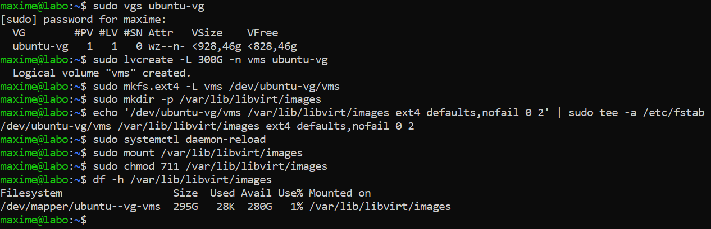
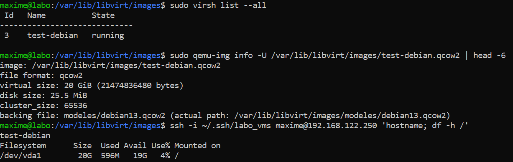
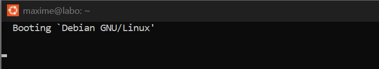

01Objectif
Transformer le serveur labo, déjà utilisé par mon homelab n°1, en hôte de machines virtuelles. Les étapes suivantes y installeront un pare-feu OPNsense, un contrôleur de domaine Windows Server, un poste client et Wazuh.
Contraintes :
- ne rien casser sur le serveur, qui fait déjà tourner le homelab n°1 (Docker, Uptime Kuma, Traefik, Ollama, scripts d'audit) ;
- budget de 0 € et matériel limité : processeur 4 cœurs, 16 Go de RAM, disque dur à plateaux de 1 To ;
- garder les bonnes pratiques de sécurité déjà en place : pas de droits inutiles, connexion SSH par clé.
Pourquoi KVM/libvirt et pas Proxmox : Proxmox est une distribution complète (Debian), qui aurait demandé de réinstaller le serveur et de reconstruire le homelab n°1. KVM fait partie du noyau Linux et s'installe sur l'Ubuntu Server déjà en place.
02Schéma et technologies
┌─────────────────────── Tour « labo » (Ubuntu Server 24.04) ─────────────────────────┐
│ │
│ Homelab n°1 (inchangé) Homelab n°2 │
│ Docker : Kuma, Traefik libvirt + KVM │
│ Ollama, scripts d'audit ┌──────────────────────────┐ │
│ │ VM test-debian │ │
│ │ 192.168.122.250 │ │
│ │ SSH par clé seulement │ │
│ └────────────┬─────────────┘ │
│ virbr0 (NAT, 192.168.122.0/24) │
│ │ │
│ Disque 1 To (LVM ubuntu-vg) ▼ │
│ ├─ ubuntu-lv 100 Go → / (système + homelab n°1) │
│ ├─ vms 300 Go → /var/lib/libvirt/images (disques des VM) │
│ │ ├─ modeles/debian13.qcow2 (image cloud Debian 13, modèle commun) │
│ │ └─ test-debian.qcow2 (20 Go annoncés, posé « par-dessus » le modèle) │
│ └─ ~528 Go libres pour plus tard │
└──────────────────────────────────────────┬──────────────────────────────────────────┘
│ enp0s31f6 → Freebox → internet| Rôle | Technologie |
|---|---|
| Hyperviseur | KVM (module du noyau Linux, processeur Intel VT-x) |
| Émulation des machines | QEMU 8.2.2 |
| Gestion des VM, réseaux et stockages | libvirt 10.0.0 (virsh), virt-install 4.1.0 |
| Format des disques | qcow2, provisionnement fin et image de base (« backing file ») |
| Configuration automatique des VM Linux | cloud-init (image cloud officielle Debian 13) |
| Stockage | LVM : volume logique dédié de 300 Go, ext4 |
03Configuration
Un volume réservé aux VM
Ubuntu n'utilisait que 100 Go du disque, dont 75 Go seulement étaient libres : pas assez pour les VM prévues (OPNsense, Windows Server, poste Windows, Wazuh). Surtout, si elles remplissaient le disque du système, le homelab n°1 tomberait avec lui. J'ai donc créé un volume LVM à part, dans l'espace libre du disque :
sudo lvcreate -L 300G -n vms ubuntu-vg
sudo mkfs.ext4 -L vms /dev/ubuntu-vg/vms
echo '/dev/ubuntu-vg/vms /var/lib/libvirt/images ext4 defaults,nofail 0 2' | sudo tee -a /etc/fstab- nofail : si ce volume pose un jour problème, le serveur démarre quand même, et le homelab n°1 avec.
- En contrepartie, libvirt attend ce montage (RequiresMountsFor=/var/lib/libvirt/images dans un fichier d'ajout systemd). S'il manque, libvirt ne démarre pas, au lieu d'écrire les VM sur le disque du système.
KVM/libvirt et moindre privilège
sudo apt install qemu-system-x86 qemu-utils libvirt-daemon-system virtinst ovmfL'installation ajoute automatiquement mon compte au groupe libvirt, ce qui revient presque à être administrateur : on peut créer une VM qui monte n'importe quel fichier du serveur. Je l'ai retiré, comme je l'avais fait pour le groupe docker dans le homelab n°1. En relisant le script d'installation du paquet, j'ai vu qu'il remettait ce droit à chaque mise à jour. J'ai donc ajouté un crochet apt qui retire le droit après chaque passage d'apt. Je l'ai testé en réinstallant le paquet : le journal auth.log montre l'ajout, puis le retrait 2 secondes après.
Les commandes virsh se lancent avec sudo. Pour une simple consultation, virsh -r (lecture seule) suffit, sans droits.
Des disques fins à partir d'un modèle
L'image cloud officielle de Debian 13 (empreinte SHA-512 vérifiée) sert de modèle commun. Chaque VM a son propre disque, posé « par-dessus », qui ne stocke que ses différences :
sudo qemu-img create -f qcow2 -F qcow2 -b modeles/debian13.qcow2 test-debian.qcow2 20GRésultat : 20 Go annoncés à la VM, 25,5 Mo réellement occupés sur le disque. Ça compte sur un disque à plateaux partagé entre plusieurs VM. Règle notée pour la suite : on ne crée jamais une VM directement sur le modèle, et on ne fusionne jamais de modifications dedans, sinon toutes les VM posées dessus seraient abîmées.
La VM de test, configurée par cloud-init
sudo virt-install --name test-debian --memory 1024 --vcpus 1 --import \
--disk /var/lib/libvirt/images/test-debian.qcow2 --osinfo debian13 \
--network network=default --video vga --graphics none --noautoconsole \
--cloud-init user-data=…/user-data,meta-data=…/meta-dataLe fichier cloud-init (rangé dans le dépôt) crée un compte avec une clé SSH dédiée aux VM du labo, distincte de mes autres clés, sans mot de passe. Il interdit la connexion par mot de passe, comme celle de root. Les VM ne redémarrent pas seules au démarrage du serveur : il ne tourne pas en permanence, et la mémoire est partagée avec le homelab n°1.
04Tests réussis
| Test | Résultat attendu | Résultat obtenu | Preuve |
|---|---|---|---|
| Processeur et KVM | VT-x présent, virt-host-validate sans échec bloquant | Conforme | — |
| Volume dédié | 300 Go montés sur /var/lib/libvirt/images, système inchangé | Conforme : 295 G | Fig. 1 |
| VM en marche | virsh list : running | Conforme | Fig. 2 |
| Provisionnement fin | Taille réelle très inférieure à la taille annoncée | Conforme : 25,5 Mo pour 20 Go | Fig. 2 |
| SSH par clé | Connexion acceptée avec la clé du labo | Conforme | Fig. 2 |
| SSH par mot de passe | Refusé | Conforme : Permission denied (publickey) | — |
| Réseau de la VM | Adresse attribuée, accès à internet par le NAT | Conforme : ping et HTTPS 200 vers deb.debian.org | — |
| Arrêt puis relance de la VM | Même identité (clé SSH d'hôte), cloud-init ne se relance pas | Conforme | — |
| Droits | Mon compte reste hors du groupe libvirt, même après une réinstallation du paquet | Conforme | — |
| Redémarrage complet du serveur | Volume monté, libvirt et réseau virtuel actifs, homelab n°1 intact | Conforme : 157 tests du homelab n°1 réussis, Uptime Kuma et Ollama en marche | — |




05Problèmes rencontrés et solutions
| Problème | Cause | Solution |
|---|---|---|
| La VM bloque sur « Booting `Debian GNU/Linux' » et redémarre en boucle (Fig. 3) | VM créée sans carte graphique (--graphics none) : cette image ne va pas plus loin que GRUB sans carte graphique | Cause cherchée en éliminant les pistes une à une (voir ci-dessous) ; correction : --video vga, même pour une VM sans écran |
| Après ce 1er démarrage raté, la VM n'avait ni réseau, ni accès SSH, ni mot de passe | virt-install supprime le petit disque de configuration cloud-init après le 1er démarrage ; il n'avait jamais été lu | VM recréée avec la carte graphique et ma propre configuration cloud-init |
| Mon compte remis dans le groupe libvirt à chaque mise à jour | Le script d'installation du paquet ajoute tous les membres du groupe sudo | Crochet apt DPkg::Post-Invoke qui retire le droit, testé |


Comment j'ai trouvé la cause du blocage, par élimination (preuves dans mon dépôt privé) :
- L'image Debian démarre-t-elle hors de libvirt, sans KVM (processeur émulé) ? Oui : l'image est saine.
- Le modèle de processeur présenté à la VM change-t-il quelque chose ? Non : toujours bloqué.
- Quatre démarrages sous KVM en faisant varier le processeur, le type de disque et la carte mère virtuelle : les quatre démarrent. KVM fonctionne.
- Le vrai disque de la VM démarre-t-il ? Oui, et qemu-img check ne trouve aucune erreur.
- En comparant la configuration générée par libvirt avec mes essais : il n'y a pas de carte graphique. Essai reproduit : 3 lignes affichées sans carte graphique, 669 avec.
Points de vigilance pour la suite :
- une VM sur le réseau NAT par défaut peut joindre le réseau de la maison, box comprise. C'est l'étape 2 (pare-feu et zones isolées) qui le règle ; d'ici là, aucun essai d'attaque sur ce réseau ;
- Docker et libvirt écrivent tous deux des règles de pare-feu : après chaque changement, vérifier les deux homelabs.
06Ce que j'en retiens
- Séparer pour protéger : un volume à part empêche les VM de remplir le disque du système qui fait tourner l'autre projet.
- Moindre privilège, vérifié dans la durée : retirer un droit ne suffit pas si une mise à jour le remet ; il faut le savoir et le tester.
- Chercher une panne par élimination : une variable à la fois, chaque essai sur une copie jetable, jusqu'à pouvoir reproduire le problème.
- Tester le redémarrage : une configuration qui marche « maintenant » n'est prouvée qu'après un redémarrage complet.